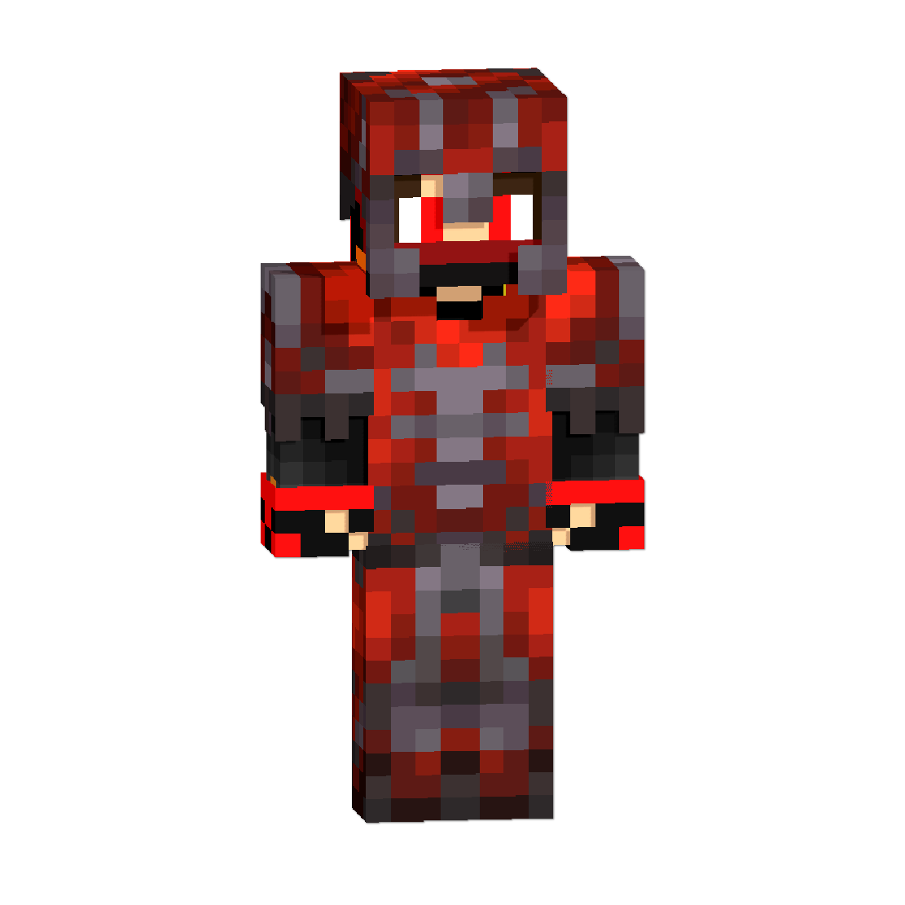
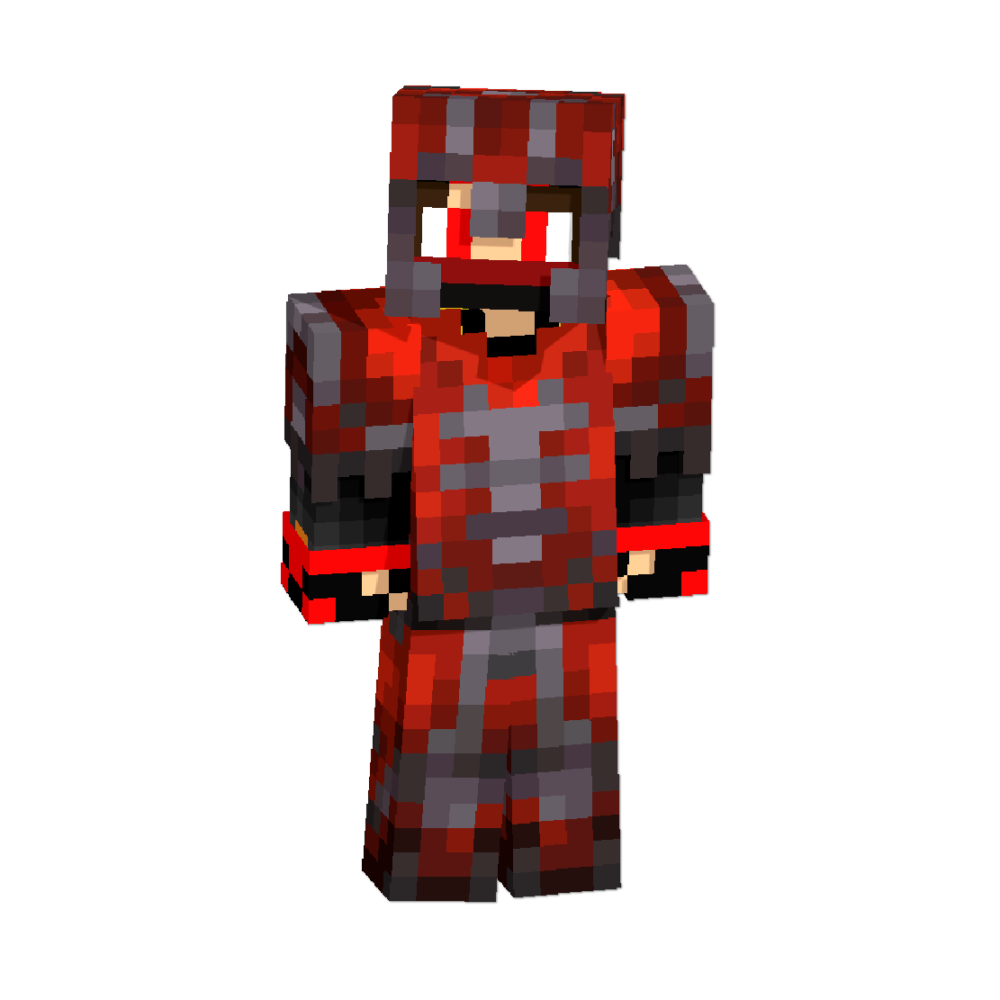
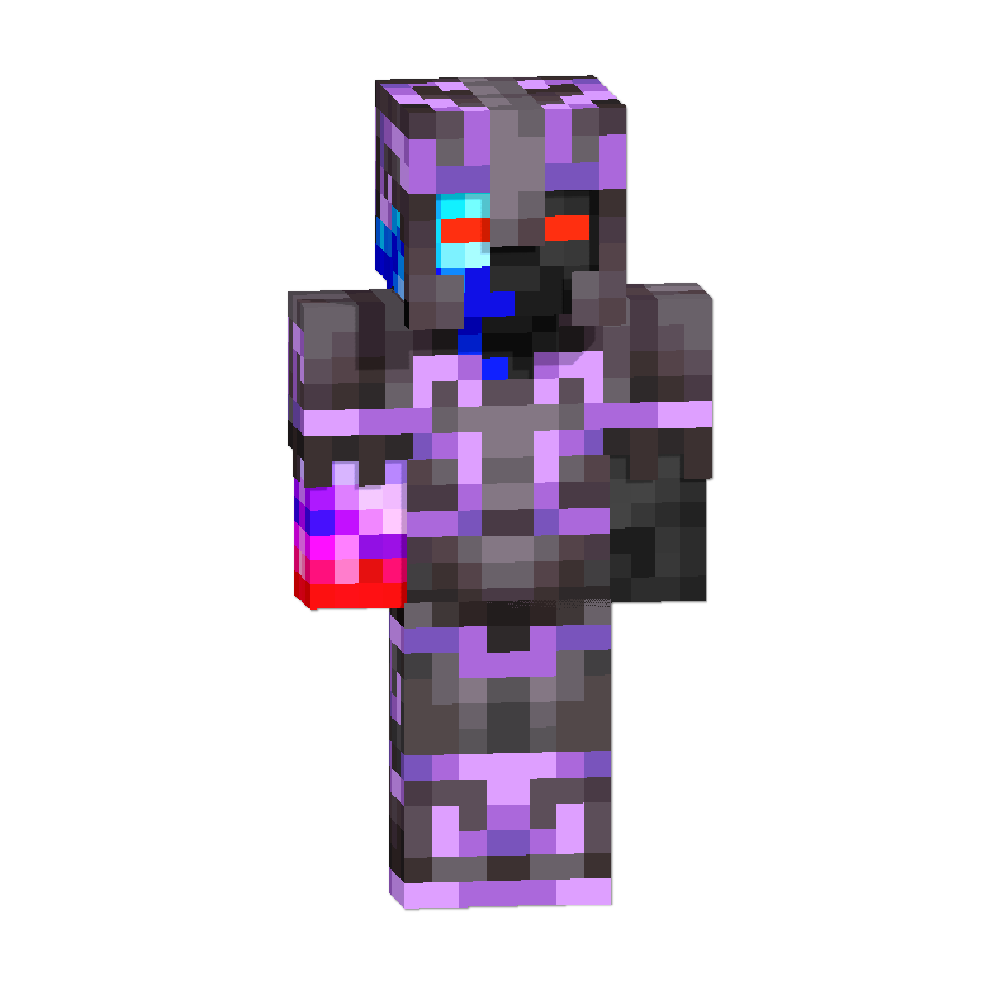
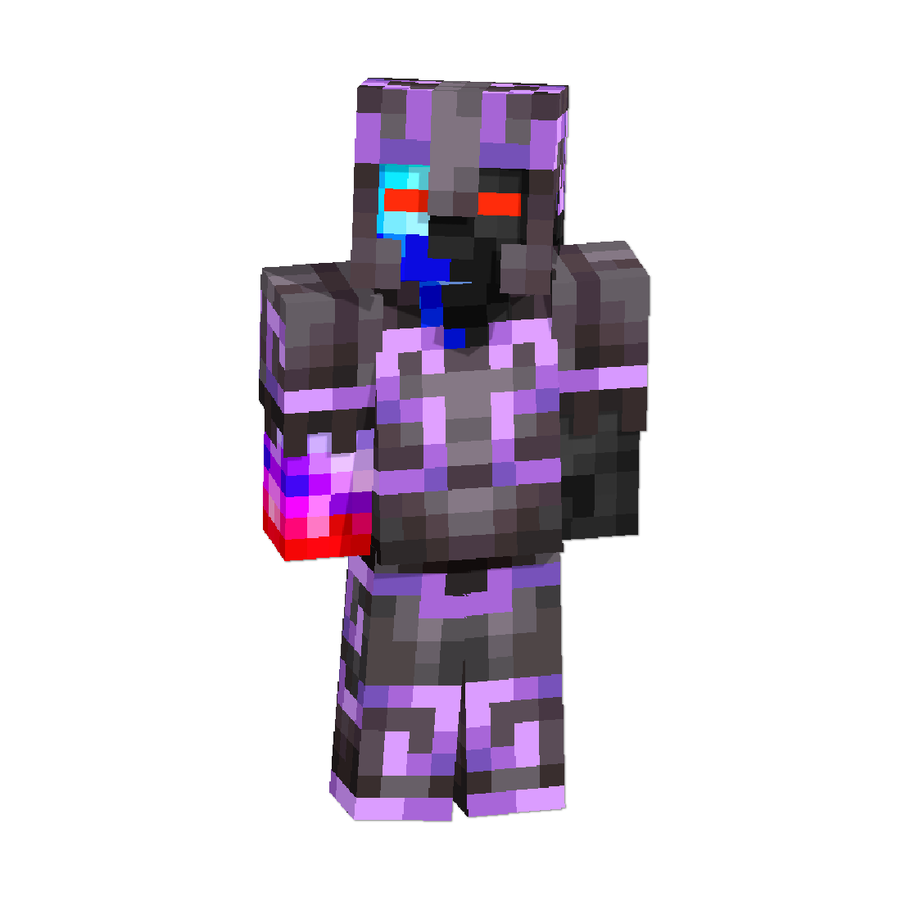

DragonFlamePrime, shown above, is a prominant Minecraft community member. He has posted many skins on the community website needcoolershoes.com and is a developing content creater on the social media platform YouTube. DragonFlamePrime is most known for his work on taking the Minecraft armor trim assets and making them into skin outer layers such as his DragonGeode netherite armor flow trim and amethyst material, left, and flare 4.1.0 with FIXED netherite armor silence trim redstone material, right.
It may come as a shock to hear but DragonFlamePrime came from very humble beginnings. He, like a lot of people, was not borne into a rich family nor neccasseraly a poor family just, an average family. He never really got to play video games growing up, it wasnt until he was 14-15 years old that he created his first roblox account and it was only when he was atleast 15 that he got his first, and main, minecraft account, DragonFlamePrime. he had spent the whole of augest-october when he was 14 hand-designing his skin and its only been updated/upgraded 4 times.
DragonFlamePrime has a majority of close friends the closest of which being his best friend DragonGeode. His other friend is Eli_link
DragonFlamePrime likes mods but only the mods that add QoL upgrdes he doesnt like anything that adds new items, mobs, biomes, dimensions, or anything else to the game he prefures a Vanilla experience moderately enhanced by various features such as mouse tweaks, zoomify, free look, xaero's world and minimap, chest tracker, armor hud, clearviews, NoDarkInventoryOverlay, and TransparentGUI's.
DragonFlamePrime has a number of hobbies of which include: biking, reading, video games (namely Minecraft), electronics, lego, and coding (DragonFlamePrime is the person responsible for coding the entirety of this website all using just basic HTML, CSS, and JavaScript code).